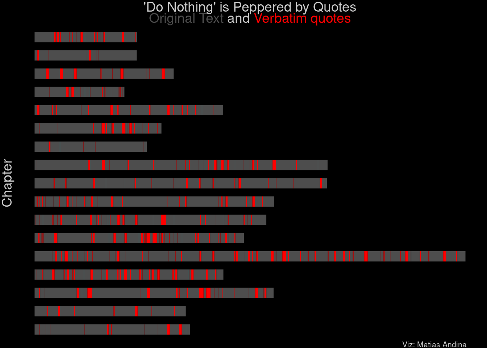
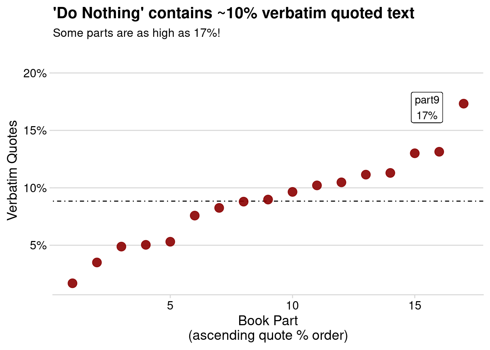

I have been lately noticing a glaring trend in some of the non-fiction books that I read: the use and abuse of verbatim quotes. They come in the shape of:
“As such and such said: INSERT LONG VERBATIM TEXT HERE”
Of course, there are no rules regarding the use of verbatim text1. But, if I can get a sense of overuse only from reading the book, it makes me curious to go get look at the data.
How much of the book is actually a verbatim text dump? Would I bet is 10%? Maybe 20%? Would lower percentages make me go easier on the author or is this a lost cause (i.e., if I notice the overuse by reading, all hope is lost)?
Example Book
Enough of chatter. Let’s try to answer this by analyzing one of the books in question: “Do Nothing” by Celeste Headlee. Reading the book in R using the epubr package gives us this table:
Code
# read the epubbook_text <- epubr::epub("Do Nothing - Celeste Headlee.epub")book_text$data[[1]] %>%mutate(text =str_sub(text, 0, 20),text =paste(text, "...")) %>% gt::gt() # needs to get the text stings truncated
We can get rid of the legal stuff that normally goes before the text and everything that comes after the content (i.e., acknowledgements and references).
Code
# A simple slice operation would dobook_txt <- book_text$data[[1]] %>%slice(6:24)
We can also get some metadata from the text (will come useful for later).
Code
# bind previous word and character countsmeta <- book_txt %>%select(section, nword, nchar) %>%mutate(part =paste0("part", 5:23)) %>%select(-section)
Now that we have the text, we can find all the instances of "something in between these quotes here" using stringr::str_locate_all():
Code
# extract the textmatch_df <- stringr::str_locate_all(book_txt$text, '"(.*?)"') %>%# give names for future binding# parts go from 5 to 23 (idx goes 6:24)set_names(nm =paste0("part", 5:23)) %>%# convert into tibble for easy bindingmap(as_tibble) %>%bind_rows(.id ="part")
Below, I’m showing a slice with an example of matched character positions and how they would look like in the text. I want to direct your attention to the second and third row. I hope you notice that these two quotes are, in fact, one single quote that was split into two.
Code
# This is an examplematch_df %>%slice(8:10) %>%mutate(quote =map2_chr( start, end, function(.x, .y) str_sub(book_txt$text[[1]], .x, .y) )) %>% gt::gt() %>% gt::tab_style(style = gt::cell_text(weight ="bold"),locations = gt::cells_column_labels() )
part
start
end
quote
part5
14893
14905
"inefficient"
part5
16002
16132
"I can hunch over my computer screen for half the day churning frenetically through emails without getting much of substance done,"
part5
16186
16336
"all the while telling myself what a loser I am, and leave at 6:00 p.m. feeling like I put in a full day. And given my level of mental fatigue, I did!"
Merging Quotes
The issue of quotes being split arises not because of a bug in code, but because the author writes in this way. She would do something like:
“A palm tree”, somebody said, “belongs to the Plant Kingdom.”
These stylistic choices will modify the statistics for the direct quotes (e.g., the average length of a quote will be much lesser than if these quotes were kept verbatim). I decided that I want to merge quotes if they are too close to each other (I will try 100 characters2). This will slightly inflate my % counts, since I’m attributing characters that are not direct quotes to actual quotes. Thus, when I calculate percentages, I will do so without merging (see @percentages-with-no-merging).
There’s one neat trick using lag and cumsum with a condition to achieve conditional grouping. We can see that rows 9 and 10 are marked as belonging to the same group now 🎉.
This intermediate step also gives us the answer to a new question:
What is the average distance between quotes?
The answer is x̄= 740 ± sd = 970 . On average, you start a new qoute after 130 words of original content. Is that a lot? Is that too little?
To be honest, it feels true to the reading experience. My sensation was that the author was using the verbatim quotes with high frequency, and the data seems to align with that. But don’t take my word for it, let’s try to visualize it.
We are two steps away from the viz.
Do the actual merge
Add the end of each chapter
We can do Step 1 using the code below:
Code
merged_quotes <- merged_quotes %>%summarize(.by =c(merge_group, part),part =first(part),start =first(start),end =last(end) ) %>%# add the lag again to see where the original text startsmutate(text_start =lag(end, default =0), .by = part)
Right now, we have the start of the original text in text_start and the start and end of each verbatim quote. We need to make use of the metadata stored in meta to add the end of the original content for of each chapter. This only matters for the very last portion that we are going to plot, so I will make a new data set that contains those values instead of merging everything together. To visualize it, I’m going to make use of a package I developed called ggethos. You can check it out here or adapt the code to work with geom_segment().
Code
# pad parts for plottingformat_part <-function(part_name) {# Extract the numeric part part_number <-as.integer(str_extract(part_name, "\\d+"))# Pad the number with zeros and prepend 'part' formatted_part <-str_c("part", str_pad(part_number, width =2, pad ="0"))return(formatted_part)}# make tail end segmentstail_data <- merged_quotes %>%summarise(.by = part, last_quote_end =max(end)) %>%left_join(meta, by='part') %>%# fix the padding after mergingmutate(part =format_part(part))# fix the padding here toomerged_quotes <- merged_quotes %>%mutate(part =format_part(part))ggplot(data=merged_quotes) +geom_ethogram(aes(x=text_start, xend=start, y = part), color ="gray30") +geom_ethogram(data=tail_data, aes(x=last_quote_end, xend=nchar, y = part), color ="gray30") +geom_ethogram(aes(x=start, xend=end, y = part), color ="red")+ cowplot::theme_nothing() +labs(title ="'Do Nothing' is Peppered by Quotes",subtitle ="<span style = 'color:gray30'>Original Text</span> and <span style = 'color:red'>Verbatim quotes</span>",caption ="Viz: Matias Andina",y ="Chapter") +theme(plot.title =element_text(hjust =0.5),plot.subtitle = ggtext::element_markdown(hjust =0.5),plot.background =element_rect(fill ="black"),text =element_text(color ='gray80'),axis.title.y =element_text(angle =90),plot.caption =element_text(size =8, hjust = .95))

I believe this plot conveys a good mental image of what reading the book feels like in terms of verbatim text usage.
Percentages with no merges
As mentioned in the beginning of the article, I was curious about how much verbatim text there was. Again, using the number of characters in each chapter stored in the meta object, we can easily calculate the percentage of all characters that are directly quoted:
Code
match_df %>%mutate(quote_chars = end - start) %>%summarise(.by = part, quote_chars =sum(quote_chars)) %>%left_join(meta, by ="part") %>%mutate(quote_frac = quote_chars / nchar,part =fct_reorder(part, quote_frac)) %>%ggplot() +geom_hline(aes(yintercept =mean(quote_frac)), lty =4) +geom_point(aes(as.numeric(part), quote_frac), size =4, alpha =0.9, color ="darkred") +geom_label(aes(x =15.5, y =0.17,label =paste(part[which.max(quote_frac)], scales::percent(max(quote_frac)),sep="\n" ))) +scale_y_continuous(labels = scales::label_percent(),expand =expansion(add =c(0.01, 0.05)))+labs(y ="Verbatim Quotes",x ="Book Part\n(ascending quote % order)",title ="'Do Nothing' contains ~10% verbatim quoted text",subtitle ="Some parts are as high as 17%!")+ cowplot::theme_minimal_hgrid()

A silver lining
Most non-fiction books are a regurgitation of something somebody else said a long time ago (there’s nothing new under the sun). In a sense then, it’s more truthful for an author to quote verbatim from the original source than to paraphrase whatever they took out of it and hide the initial message under a footnote3.
Footnotes
But I’m sure a copyright lawyer would know much more than I do regarding how much verbatim text you can include and still claim ownership of your work.↩︎
Of course, this threshold is arbitrary. How did I come up with it? I asked ChatGPT to come up with 10 interjections that were a bit longer than “they said” and phrases where sitting comfortably around 50. I doubled it to be super sure that we were not missing instances.↩︎
This paragraph was indeed a paraphrase of my editor’s (read wife’s) reaction to my article. Talking to her is a great exercise in positive reframing.↩︎
I'm so glad you're here. As you know, I create a blend of fiction, non-fiction, open-source software, and generative art - all of which I provide for free.
Creating quality content takes a lot of time and effort, and your support would mean the world to me. It would empower me to continue sharing my work and keep everything accessible for everyone.
How can you support my work?
There easy ways to contribute. You can buy me coffee, become a patron on Patreon, or make a donation via PayPal. Every bit helps to keep the creative juices flowing.
Not in a position to contribute financially? No problem! Sharing my work with others also goes a long way. You can use the following links to share this post on your social media.
Affiliate Links
Please note that some of the links above might be affiliate links. At no additional cost to you, I will earn a commission if you decide to make a purchase.
![]()